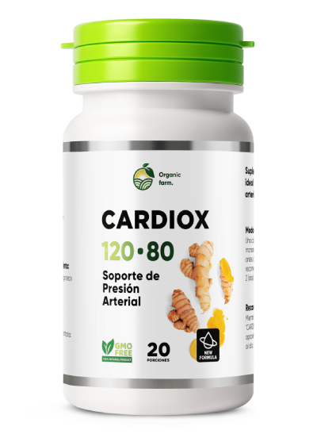

Cardiox ©: Estabiliza tu presión arterial de forma segura y natural desde el primer uso.
Ataca la raíz del problema, limpiando tus vasos sanguíneos y reduciendo a cero el riesgo de infartos o derrames cerebrales.
Alivio Rápido: Regula la presión en las primeras 6 horas gracias al poder de los bioflavonoides activos.
Protección Total: Restaura la elasticidad y limpia las paredes de tus vasos sanguíneos sin químicos agresivos.
100% Seguro: Altamente efectivo en todas las edades y en etapas I, II y III de la hipertensión.

Descuento -50%
ATENCIÓN: Stock promocional limitado a:
18 unidades
Precio Normal:
€
Precio Oferta (Hoy):
€

¡Escucha a tu cuerpo! ¿Padeces alguno de estos peligrosos síntomas a diario?
Fuertes dolores de cabeza
Palpitaciones o Taquicardia
Puntos negros o destellos en la vista
Cansancio crónico sin motivo
Ansiedad, irritabilidad, insomnio
Hinchazón en el rostro o piernas
Zumbido constante en los oídos
Manos y pies dormidos o fríos
Sudoración excesiva
Picos repentinos de presión
La Bomba de Tiempo Silenciosa: ¿Por qué no debes ignorarla?
Ignorar la presión alta es jugar a la ruleta rusa con tu vida. Las estadísticas son frías: el 89% de los casos de hipertensión terminan en infartos fulminantes o trombosis severas. La presión daña tus vasos sanguíneos silenciosamente, aumentando dramáticamente el riesgo de derrames cerebrales irreversibles.
Esta bomba se acelera aún más por factores cotidianos: el estrés del día a día, la mala alimentación, el colesterol alto, el cigarro y la falta de ejercicio. Si tienes sobrepeso, tu riesgo de sufrir una tragedia cardiovascular se multiplica por 4. No es solo un número alto en el tensiómetro, es tu vida en juego.

El descubrimiento científico que está salvando vidas
Tras 8 años de intensa investigación, expertos del Centro Nacional de Flebología desarrollaron este revolucionario purificador y estabilizador vascular.
Considerado el avance médico del año, esta fórmula fue nominada al prestigioso Premio Internacional de la Fundación Gairdner.
Múltiples ensayos clínicos rigurosos demostraron una eficacia sin precedentes, obteniendo certificaciones de alta calidad y aprobación para su uso seguro y sin receta médica.
El mecanismo único de Cardiox: Combate las 5 causas de raíz

Estrés y Sistema Nervioso
Cardiox bloquea la ansiedad, calma los nervios y combate el insomnio de forma natural gracias a la potente raíz de valeriana y agripalma.
Colesterol y Toxinas
Descongestiona las arterias y limpia los vasos sanguíneos de placas y residuos, impulsado por bioflavonoides puros de café verde y espino.
Mala Circulación y Coágulos
Mejora dramáticamente el flujo sanguíneo, fortalece las paredes venosas y ayuda a disolver coágulos gracias al extracto concentrado de lúpulo.

Picos de Azúcar en Sangre
Ayuda a regular los niveles de glucosa y previene complicaciones diabéticas mediante la sinergia de los extractos de orégano y cola de caballo.

Retención y Sobrepeso
Acelera el metabolismo, ayuda a desinflamar el cuerpo y mejora el funcionamiento renal con la ayuda activa del extracto de melisa.

La Verdad Médica Revelada
¡Basta de tratamientos a medias!
El secreto real para vencer la hipertensión son los bioflavonoides activos. Estos componentes reparan el daño vascular. Sin embargo, en las farmacias tradicionales te venden productos químicos que solo disfrazan el síntoma temporalmente.
¿El problema? ¡Te vuelves esclavo de las pastillas de por vida!
Como cardiólogo, he analizado docenas de fórmulas. Puedo afirmar con seguridad que Cardiox es el único suplemento actual en el mercado latino con una concentración pura y masiva de bioflavonoides biodisponibles. Cuando vi los resultados de los ensayos independientes, cambié por completo mis recomendaciones. Dejé de recetar químicos agresivos y ahora exijo a mis pacientes que inicien con esta limpieza vascular profunda.
¡Tu salud no es un juego! Si quieres proteger tu corazón de forma real y segura, debes atacar la causa, no solo el síntoma. Cardiox es mi recomendación número uno para recuperar una vida normal.
Dr. Antonio López Médico Cardiólogo, Ph.D. en Ciencias Médicas
Descuento -50%
Stock de oferta disponible en nuestros almacenes:
18 unidades
Precio Normal:
€
Precio Oferta:
€
Asegura tu frasco antes de que se agoten:
Eficacia Clínica Comprobada Científicamente
Resultados de la Investigación Oficial
GRUPO PLACEBO
Estabilización real de la presión
1%
Limpieza venosa y arterial
0%
Alivio de arritmias y taquicardias
2%
GRUPO Cardiox ©

Estabilización real de la presión
100%
Limpieza venosa y arterial
90%
Alivio de arritmias y taquicardias
99%
Historias reales de personas que recuperaron su vida con Cardiox ©

El miedo me paralizaba. Vi a mi hermana mayor sufrir un derrame cerebral severo por culpa de la presión alta y no quería terminar igual. Estaba desesperada por encontrar algo natural, porque las pastillas de la farmacia me destruían el estómago. Un especialista privado en Miraflores me recomendó Cardiox. Ha sido mi salvación. Ya pasaron meses y mi tensiómetro siempre marca perfecto. Soy una mujer sana, llena de energía y ya no vivo con el terror de sufrir un infarto. ¡No jueguen con su vida!

Nada funcionaba para mí. Tenía unos picos de presión espantosos que me dejaban mareado todo el día, no podía ni jugar con mis nietos. Entré de casualidad a un programa de prueba para este producto natural y fue la mejor decisión de mi vida. Desde la primera semana sentí un alivio inmenso en el pecho, se me fueron los zumbidos de los oídos y los dolores de nuca. Hoy mi presión parece la de un muchacho de 30 años. Se lo recomiendo a todos mis amigos.

Fui muy terco. Padecía de hipertensión desde hace 3 años y lo ignoré por completo. Hasta que hace 6 meses sentí una punzada brutal en el pecho... era un microinfarto. El susto fue terrible. Los doctores me dieron una lista gigante de químicos, pero leí sobre Cardiox en un foro médico y decidí darle la oportunidad. Fue milagroso. Me limpió por dentro. Ayer fui a mis chequeos generales y el cardiólogo no podía creer lo limpias que estaban mis arterias. ¡Estoy sano como un roble!
Los Beneficios Únicos de Cardiox ©

Estabilidad Rápida y Segura.
Siente el alivio desde las primeras 6 horas sin agredir tu organismo.

Cero Caídas Bruscas.
Armoniza de forma suave el ritmo cardíaco, evitando mareos por bajones de presión.

Salud Cardiovascular Integral.
Combate arritmias, elimina el cansancio crónico, mejora el oxígeno al cerebro y ayuda a tu memoria.
100% Orgánico y Sin Dependencia.
Una fórmula biocompatible que tu cuerpo asimila perfectamente sin efectos secundarios indeseados.

Indicaciones de Uso:
Toma 2 cápsulas al día (después de las comidas) con un vaso de agua. Para lograr la limpieza vascular completa y resultados permanentes, se recomienda realizar el curso completo. Las instrucciones detalladas vienen en el empaque oficial.
Descuento -50%
Stock limitado reservado para Perú:
18 unidades
Precio Normal:
€
Precio Oferta (Hoy):
€
Ingresa tus datos reales para coordinar la entrega: